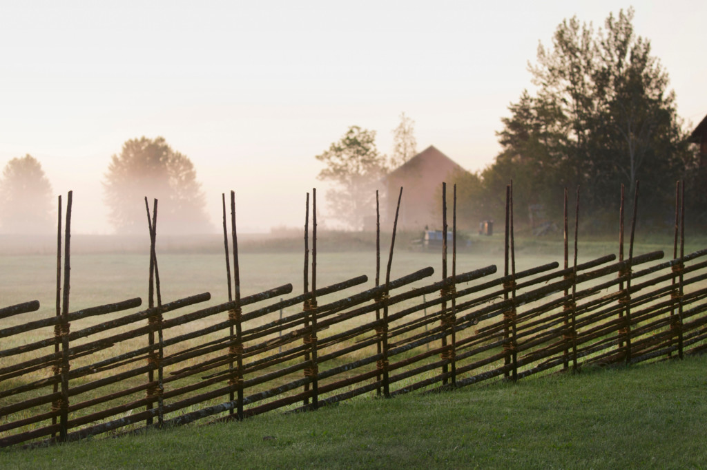

The seasons set the tone
Some customs are so old that we have forgotten their origins. But we still observe them, because we have always done so and because we have come to enjoy them. They have grown to be a part of our life cycle, giving shape to our lives and giving us a sense of time, and also lending the year a seasonal rhythm.
In Sweden, many customs are closely associated with the changing seasons. Swedes celebrate summer with an intensity that can only be found in a people who have just endured a long, dark winter. They light candles at Advent and pay homage to a white-clad Lucia with a crown of candles in her hair.
Swedish food tends to be influenced by the seasons. The way it is spiced and cooked often reflects the storage needs of the peasant communities of the old days, as in the case of pickled herring, freshly salted or smoked meat, or dairy products that have been curdled, boiled or left to mature.
Headlong into the modern era
It is not simply about the passage of time and human forgetfulness, however. The Swedes are split in their image of themselves: while they are proud of their own history, they also become uncomfortable when confronted with that which is deemed continental and internationally acceptable.
When the opportunity arose, Sweden flung itself headlong into the modern era. Its remote position on the map, its remarkable capacity for staying out of wars and its endless supply of timber and ore made Sweden both a rich country and an unusual one by international standards.
While other countries experienced conflicts and class divisions, Swedish citizens enjoyed a consensus of opinion and a belief in the future. At times, belief in innovation, in the welfare society – what came to be known as the folkhem in Sweden – and in growth was so strong that the country forgot its history.

International influences
Immigration has brought with it new customs and traditions that in time will become woven into the fabric of what we call Swedish society. By the same token, the ‘new Swedes’ take up old Swedish traditions, and it is often the children who introduce them into the family. Daycare centres and schools exert a considerable influence in the social sphere. The result – at best – is cultural cross-fertilisation.
Most Swedes already know what the Muslim month of fasting, Ramadan, involves. Several new traditions have found their way into Swedish life in recent years, usually via the media or as a result of commercial pressures. Valentine’s Day and Halloween have now become a feature of the Swedish calendar as well, albeit with some modifications.
A few generations from now, the origins of these customs may have been forgotten, for as soon as a people absorb something in the form of a custom, where it actually originated becomes a matter of little interest.
Indoors or outdoors?
Most traditional customs are celebrated in the home, with the family. The only real exception is Midsummer, when Swedes, regardless of the weather, want to be outdoors, to meet others and to greet the arrival of summer. But then Midsummer is an occasion with pagan roots.
The Lutheran church was not particularly fond of communal festivities and processions, and Sweden’s scattered population in combination with the chilly climate meant that celebrations were moved indoors and became a family affair.
Times change, however. Visitors to Sweden in wintertime may find the streets deserted, but summer visitors encounter a completely different scene. A wide range of festivals and street parties have become a feature of the Swedish summer in recent years, bringing people together to listen to music, eat and enjoy one another’s company.